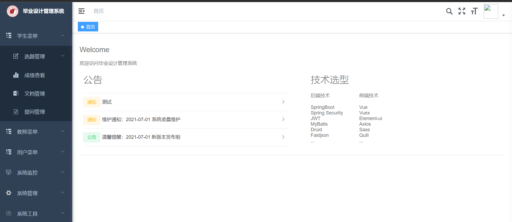

Rui-Yang Ju
Rui-Yang Ju 鞠睿陽 |
About Me
Rui-Yang Ju is currently studying (2019-present) in Division of Electronics and Information Engineering, Department of Electrical and Computer Engineering from Tamkang University (TKU), Taiwan, advised by Prof. Jen-Shiun Chiang.
Research
- Network Model Compression
- Transformers in Vision
- Image Classification
- Object Detection
- Instance Segmentation
Exchange Experiences
- Summer Exchange Course, Peking University, Beijing, China (2019)
- FIST Course, Fudan University, Shanghai, China (2019)
- Summer Course, University of Cambridge, Cambridge, United Kingdom (2021)
Journals

|
ThreshNet: An Efficient DenseNet using Threshold Mechanism to Reduce Connections. |
Work Experience
- Research interns instructed by Prof. Sun, 2022/3 - now. We worked on RNA 3D Structure Prediction.
- Research interns instructed by Prof. Chen, 2021/5 - 2022/1. We worked on Fraffic Flow Prediction.
Open Source Porject
|
keras4torch, A compatible-with-keras wrapper for training PyTorch models. |
|
|
Dating box, A website for users to exchange contact. |
|
 |
Graduation-project-topic-management-system. |
Awards
- Second-class Student Scholarship 2021.
- Third-class Student Scholarship 2020.
Misc
-
I am siginficantly facilitated by some open courses, which shaped my professional skills and researches. Check here.
-
CET-4: 578, and CET-6: 543.